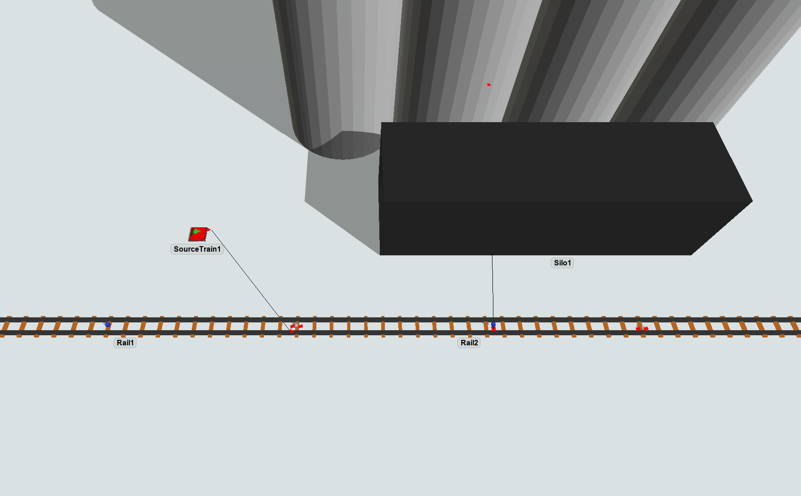
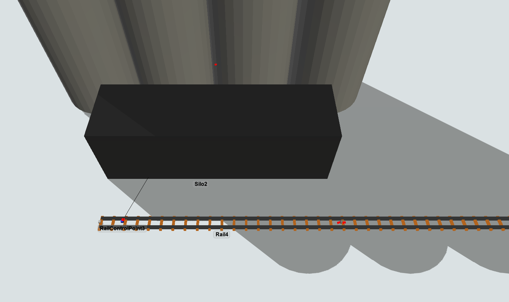
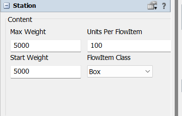
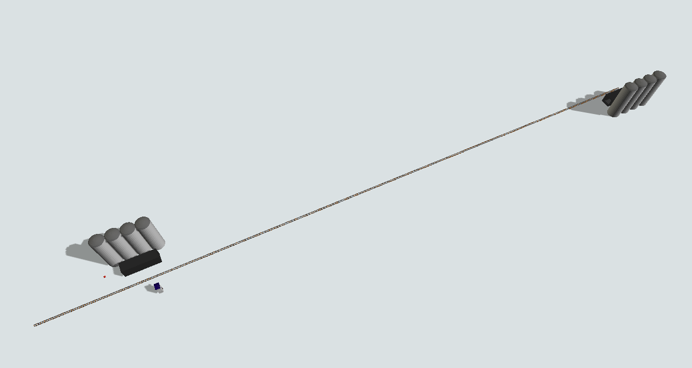
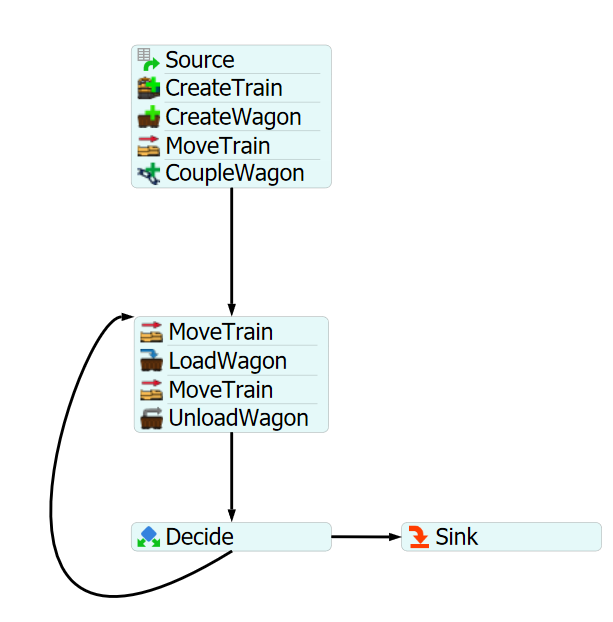

Exercise Information
Five tonnes of material must be transported from one station to
another, a locomotive must travel from the empty station to the
loaded one, going through a 300 meters rail. The locomotive can
carry 500 kilograms on each trip, going at a velocity of 10 m/s,
both coupled and uncoupled.
Step 1 Creating objects
In order to achieve the solution for the problem, you should
create the following objects:
- Create one "SourceTrain".
-
Create four Rails, then resize Rail3 xvalue to 300. Connect
SourceTrain to the Rail2 (using the A key) and
then connect Rail1 to Rail2, Rail2 to Rail3, Rail3 to Rail4 via
proximity.
-
Create three RailControlPoint and place one on Rail1, Rail2 and the
other one on Rail4. The RailControlPoints should change
color if they are connected correctly to the Rails. We
recommend the creation of the RailControlPoints in a empty
space and, after that, you can place it on the Rails.
-
Create two Stations, then connect its center port (using the
S key) to the RailControlPoint on Rail2 and the
other station to RailControlPoint on Rail4.
-
On the initial Station, set the "Max Weight" to 5000 (5
tonnes) and, on the other one, set "Start Weight" and "Max
Weight" to 5000 (5 tonnes).



Your model should be looking like this:

Step 2 Processflow Configuration
In order to achieve the solution for the problem, you should
create the following processflow tasks:
- Create a Schedule Source.
- Create a "CreateTrain" activity.
- Create a "CreateWagon" activity.
- Create a "MoveTrain" activity.
- Create a "CoupleWagon" activity.
- Create a "MoveTrain" activity.
- Create a "LoadWagon" activity.
- Create a "MoveTrain" activity.
- Create a "UnloadWagon" activity.
- Create a "Decide" activity.
- Create a Sink.
Your processflow should be looking like this:

To configure your processflow tasks follow the steps:
-
On "CreateTrain" activity, point the "Source Train" reference to your
SourceTrain, set both the "Locomotive Uncoupled" and the
"Locomotive Coupled" to the value 10 and the "Max Weight" to
500.
- On "CreateWagon" activity, point the "Control Point" reference to the
RailControlPoint on Rail1, set wagons quantity to 1 and check "Reverse Create".
-
On the first "MoveTrain" activity, set train reference to "token.train" and destiny
to the label "token.wagon" on Rail1.
-
On "CoupleWagon" activity, set train reference to "token.train" and wagon
reference to "token.wagon".
-
On the second "MoveTrain" activity of the block, set train reference to
"token.train" and destiny to the RailControlPoint on Rail4.
-
On "LoadWagon" activity, set train reference to "token.train" and
"Control Point" reference to the RailControlPoint on Rail4.
Leave the "Load Type" on "Full Loaded Release Only".
-
On the third "MoveTrain" activity of the block, set train reference to
"token.train" and destiny to the RailControlPoint on Rail2.
-
On "UnloadWagon" activity, set train reference to "token.train" and
"Control Point" reference to the RailControlPoint1 on Rail2.
-
On the "Decide" activity, set a conditional decide with the value
"getvarnode(Model.find("Silo2"), "currentWeight").value ==
0", where "Silo2" is the name of the loaded station and can
be different depending on the order of creation of the
objects. The connector 1 should be the Sink and the
connector 2, the block that loads and unloads the train.
With this configuration your model is ready.